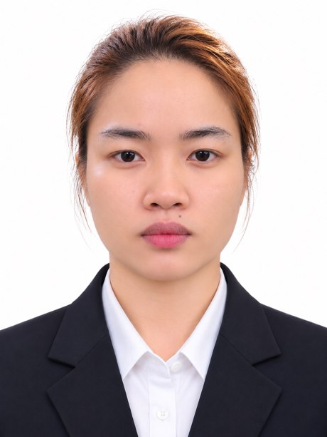

ERP · Systems Analysis · Practical Development
สุธินันท์ ปาระพิมพ์
Programmer / ERP Support → ERP System Analyst
เปลี่ยนความต้องการของผู้ใช้งานให้เป็นโซลูชันที่ใช้งานได้จริง จากประสบการณ์ Microsoft Dynamics AX2012 สู่การสนับสนุนโครงการ Dynamics 365 Finance & Operations พร้อมทักษะวิเคราะห์ระบบ พัฒนาเว็บ และแปลงข้อมูล

STILL BECOMING.
ตั้งแต่ มิ.ย. 2559ประสบการณ์ทำงาน บริษัท สหฟาร์ม จำกัด
AX2012 · 9 ปีERP Support · Configuration · Requirements
D365 F&Oร่วมโครงการ Implementation ตั้งแต่ ก.ค. 2569
เกี่ยวกับฉัน
Business understanding × Technical executionจากการแก้ปัญหา สู่การออกแบบทางแก้
ทำงานที่บริษัท สหฟาร์ม จำกัด ในบทบาท Programmer / ERP Support ตั้งแต่ 1 มิถุนายน 2559 ดูแลการใช้งาน Microsoft Dynamics AX2012 วิเคราะห์ความต้องการ ตั้งค่าระบบ ออกแบบและพัฒนาโปรแกรมเพิ่มเติม รวมถึงอบรมผู้ใช้งานและประสานผู้ให้บริการภายนอก (Vendor)
ตั้งแต่กรกฎาคม 2569 มีส่วนร่วมในการเปลี่ยนผ่านสู่ Dynamics 365 Finance & Operations โดยสนับสนุนการประสาน Requirements, GAP/Issue, Interface และ UAT
แนวทางการทำงาน
- เริ่มจากปัญหาและกระบวนการจริงของผู้ใช้งาน
- พัฒนาโซลูชันที่ตอบข้อจำกัดของ ERP
- ประสานงานระหว่าง Business, IT และ Vendor
- เรียนรู้ระบบใหม่และสนับสนุนการใช้งานต่อเนื่อง
เส้นทางการทำงาน
Career timeline · ไม่อ้างปีเลื่อนตำแหน่งที่ยังไม่ยืนยันก.ค. 2569 — ปัจจุบัน
Dynamics 365 Finance & Operations Implementation
บริษัท สหฟาร์ม จำกัด · โครงการเปลี่ยนผ่านระบบ ERP
สนับสนุนการประสานงานระหว่างผู้ใช้ ทีม IT และ Vendor ติดตามประเด็น GAP/Issue และการทำงานร่วมกันด้าน Interface และ UAT
มิ.ย. 2559 — ปัจจุบัน
Programmer / ERP Support
บริษัท สหฟาร์ม จำกัด · Microsoft Dynamics AX2012
ตรวจสอบและแก้ปัญหาระบบ ERP ตั้งค่า Configuration วิเคราะห์ Requirement ออกแบบและพัฒนาโปรแกรมเพิ่มเติม จัดอบรมผู้ใช้ และประสาน Vendor โดยมีประสบการณ์ดูแลผู้ใต้บังคับบัญชาตามที่ระบุในประวัติงาน
ผลงานที่เลือกนำเสนอ
Selected projects · ปัญหา → สิ่งที่ทำ → ผลลัพธ์
PROJECT 01 / ERP REPORTING
ระบบรายงานติดตามใบสั่งซื้อ (PO Reporting)
พัฒนารายงานเพิ่มเติมจาก AX2012 ให้ฝ่ายจัดซื้อดูสถานะ PO ตามสัปดาห์และ Cost Center ได้ด้วยตนเอง โดยลดการรวบรวมข้อมูลจากหลายส่วน
PHPSQL ServerHTML/CSSBootstrap
อ่านรายละเอียด Problem–Action–Result
ปัญหารายงานมาตรฐานไม่ตอบโจทย์การติดตามสถานะ PO รายสัปดาห์และ Cost Center ผู้ใช้ต้องนับสัปดาห์และรวบรวมข้อมูลเอง
สิ่งที่ทำพัฒนาเว็บรายงานด้วย PHP, HTML, CSS, Bootstrap เชื่อมต่อ Microsoft SQL Server
ผลลัพธ์ผู้ใช้เรียกรายงานได้เอง ลดขั้นตอนการดึงข้อมูลจากหลายส่วนและการจัดเตรียมรายงาน
PROJECT 02 / FINANCIAL REPORTING
รายงาน Trial Balance แบบกำหนดเอง
เพิ่มข้อมูลที่ผู้ใช้ต้องการ เช่น Cash Flow และรองรับการดึงข้อมูลจำนวนมากกว่ารายงานมาตรฐานในกรณีที่ AX2012 ค้าง
PHPSQL ServerHTML/CSSBootstrap
อ่านรายละเอียด Problem–Action–Result
ปัญหาTrial Balance มาตรฐานไม่แสดงบางคอลัมน์ที่ผู้ใช้ต้องการ และอาจค้างเมื่อข้อมูลจำนวนมาก
สิ่งที่ทำวิเคราะห์ข้อจำกัดและพัฒนาเว็บรายงานด้วย PHP เชื่อม Microsoft SQL Server เพื่อแสดงข้อมูลเพิ่มเติม
ผลลัพธ์ผู้ใช้เข้าถึงคอลัมน์เพิ่มเติมและเรียกข้อมูลปริมาณมากผ่านรายงานที่พัฒนาขึ้นได้ในกรณีที่รายงานมาตรฐานมีข้อจำกัด
PROJECT 03 / DATA TRANSFORMATION
เครื่องมือแปลง Text File จาก AX2012 สำหรับ RD Prep
แปลงไฟล์ที่ส่งออกจาก AX2012 ให้เป็นรูปแบบสำหรับนำเข้า RD Prep พร้อมเรียนรู้ขั้นตอนกับผู้ใช้และสนับสนุนงานประจำเดือน
PythonAI-assisted codingData transformation
อ่านรายละเอียด Problem–Action–Result
ปัญหาText File ที่ส่งออกจาก AX2012 ไม่ตรงกับรูปแบบข้อมูลนำเข้าของ RD Prep
สิ่งที่ทำศึกษาการทำงานร่วมกับผู้ใช้และพัฒนาโปรแกรมแปลงไฟล์ด้วย Python โดยใช้ AI ช่วยเขียนโค้ด
ผลลัพธ์ได้เครื่องมือแปลงไฟล์สำหรับนำเข้า RD Prep และให้คำแนะนำผู้ใช้อย่างต่อเนื่องทุกเดือน
PROJECT 04 / ERP TRANSITION
AX2012 → Dynamics 365 F&O
ประสานความต้องการ ติดตาม GAP/Issue และสนับสนุนกระบวนการ Interface และ UAT ในโครงการเปลี่ยนผ่าน ERP
D365 F&OUATVendor coordination
อ่านรายละเอียดงานที่รับผิดชอบ
บทบาทสนับสนุนการประสานงานและติดตามประเด็นระหว่างผู้ใช้งาน ทีม IT และ Implementation Vendor ไม่ได้อ้างว่าเป็นเจ้าของโครงการทั้งหมด
ผลลัพธ์มีส่วนร่วมในการติดตามปัญหาและการทดสอบระหว่างการเปลี่ยนผ่านระบบ โดยยังไม่มีตัวชี้วัดเชิงปริมาณที่ยืนยัน
ความเชี่ยวชาญ
Skills & tools · เน้นเฉพาะที่ใช้จริงERP & Functional
Microsoft Dynamics AX2012 · Dynamics 365 F&O · ERP Configuration · Requirement Analysis · User Support · UAT Coordination
Development & Data
PHP · Python · JavaScript · HTML · CSS · Bootstrap · MySQL · Microsoft SQL Server · Data Conversion
Collaboration
System Design · Vendor Coordination · Issue Tracking · User Training · Cross-functional Communication
การศึกษา
Education🎓
มหาวิทยาลัยราชภัฏเทพสตรี จังหวัดลพบุรี
วิทยาศาสตรบัณฑิต สาขาวิทยาการคอมพิวเตอร์ · เกียรตินิยมอันดับ 2 · GPA 3.36
หมายเหตุ: ยังไม่ใส่ปีสำเร็จการศึกษา เนื่องจากมีข้อมูล พ.ศ. 2559 และ 2560 ต่างกัน กรุณาตรวจจาก Transcript ก่อนเผยแพร่ปีจบ